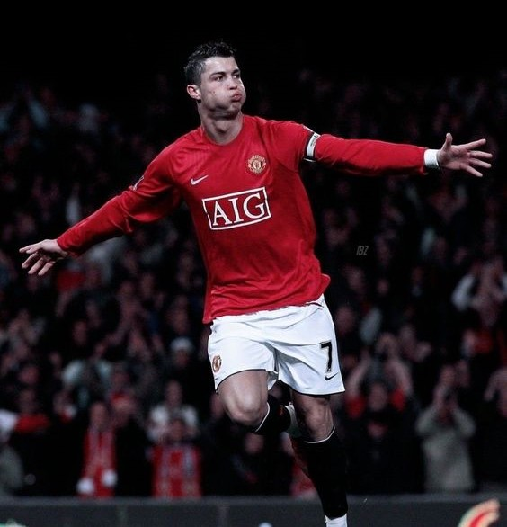

Cristiano Ronaldo dos Santos Aveiro is a Portuguese professional footballer who plays as a forward for and captains both Saudi Pro League club Al Nassr and the Portugal national team
Overall, the R34 GT-R V-Spec is considered one of the most desirable and collectible versions of the car, thanks to its combination of performance, exclusivity, and advanced technology. Only a limited number of V-Spec models were produced, making them highly sought-after by enthusiasts and collectors around the world.
The best and the most dangerous mafia group of Turkey also considered the power of muslims in the world

Predators are an important part of a healthy ecosystem. Predators remove vulnerable prey, such as the old, injured, sick, or very young, leaving more food for the survival and success of healthy prey animals. Also, by controlling the size of prey populations, predators help slow down the spread of disease.

Tajikistan is a country in Central Asia surrounded by Afghanistan, China, Kyrgyzstan and Uzbekistan. It’s known for rugged mountains, popular for hiking and climbing. The Fann Mountains, near the national capital Dushanbe, have snow-capped peaks that rise over 5,000 meters. The range encompasses the Iskanderkulsky Nature Refuge, a notable bird habitat named for Iskanderkul, a turquoise lake formed by glaciers.